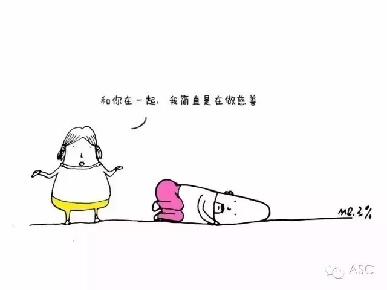
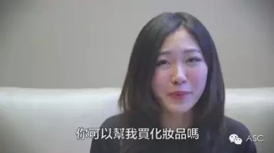

互惠动态
|
|
一句话惹毛留学生？
尽管近些年来，留学生在国内已经并不少见，但是很多人其实还是对这个群体存在误解。尤其是每次回国聚会的时候，总是有一些人会提出一些奇怪的问题，让你想直接抽死他。那么，留学生最讨厌别人说自己什么呢？
“哎呦，留学，家境不错嘛，去国外，富二代哦！小开嘛，每天都开跑车哦，跑车有几部啊？”
不，其实我只喜欢那充满童年回忆的小三轮！“那你爸妈有在国外给你买房子吗？是不是像国外电影那样有很大游泳池啊”
像我这种VIP哪用买啊，学校泳池那么大随便游，方便的很！“你在国外花钱，你爸妈都不管你吧”
可算说对了，我爸妈从来不管，只是这学期的钱花没了剩下的日子喝西北风呗！
“你去国外那么久，中文还是那么好！”
“你在国外那么久，英文一定很厉害吧！那你英文一定很流利哦，我有一份英文作业你可不可以帮我翻译一下，拜托啦！“
不好意思，请转某宝，据说10块钱100字。“留学生，陪我讲两句英文嘛，讲两句英文听听看嘛，你回来大家是不是抢着要你啊，英文那么好，工作一定很好找喽！”
我们是歪果仁说着外语跟本国人竞争，可棒啦！
“是不是很多洋妞啊！洋妞身材一定都很好！！有没有，有没有？”
看着你精神抖擞的样子，我是说实话还是说实话啊！
还不懂？
“真好，可以看到雪耶！！！”
“真好！可以看到熊耶！！！”
“好好，空气一定很好噢！房子很大耶！”
说实话，国外的雪跟国内的雪并没有什么区别！
“三点下课！不用点名！”

呵呵，不做作业不去上课，你行你上！
-哎，你住哪里啊？
-加拿大
-噢，美国哦！
-你读哪里呀？
-多伦多大学-噢，那是在加州吗？
-你是不是在美国！？你是不是在加州？！
-我朋友也在加州哦，离你那是不是很近啊
......
你真的确定你的朋友是在加州还是你所有的朋友都在加州？
-你有交外国女朋友吗？
-你有没有交白人女朋友啊
-感觉怎么样啊？
-外国帅哥多吗？
-外国男生是不是都比较浪漫？
-听说他们都很开放哎！
请问你把这个问题搞懂了，到底对你有什么好处。

-你可以帮我买化妆品吗？

-可以帮我买衣服吗？可以帮我买包包吗？美国卖得比较便宜
-Chanel、Fendi、Prada、Givenchy、Gucci、H&M。。。。。。
所以你！到！底！要！买！什么！
“哦，对了，还有热水瓶、热水器、枕头、点灯、相机、小木屋、游艇、法拉利！好男人！”
“你住国外哦，看不出来哎”
所以留学党身上是要携带地标，不对，要携带加州地标！“你是不是变胖了啊，国外吃很好哦，国外东西好吃吗？你们是不是每天都吃汉堡和薯条！”
等你胖的！“看你Facebook玩得照片，不是去读书吗？”

郑重宣布：我是来读书的，没有异国恋、不看洋妞、不做代购！！！

关于互惠，您了解得够多么？
请外国学生来家庭照顾孩子，辅导孩子外语？
只了解这些是不够的！
获取更多信息请参考以下方式：
联系ASC：
电话：86-21-61116069(上海中心）
86-25-66065662（南京中心）
全国家庭均可申请！
手机：15601666586（可加微信）
Q Q：3259637585
微信：asc-center
邮箱：info@asc-center.com
网站：www.asc-aupair.com

感谢您对我们的关注